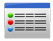
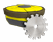
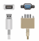
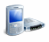

Opens the following submenu with tools to configure the receiver.
| Manages receiver tracking parameters such constellation, tracking signals for selected constellation, etc. This dialog consists of the following tabs: Constellations, Signals, GPS, GLONASS, Galileo, BeiDou, SBAS, QZSS, L-Band or OmniSTAR. Tabs for satellite systems not supported by the connected receiver will not be displayed. |
|
| Manages various positioning settings, including positioning mode, desired solution type, reference station position, and heading. | |
|
 |
Displays and configures receiver ports. |
| Manages power output to internal slots, radio and cellular modems and charging of the internal batteries. | |
| Manages volume parameters of HiPer II and HiPer V receivers. | |
| Displays and configures Bluetooth and Long Link parameters. | |
| Manages network settings and services available in the receiver. | |
| Manages Ntrip functionality. | |
| Manages event notifications. | |
| Manages SIM cards for receiver. | |
| Manages the level and compass. | |
| Manages PPS signal, Event marker settings and reference frequency settings. | |
| Exports receiver settings to an external *.json file. | |
| Imports receiver settings from an external *.json file. |
